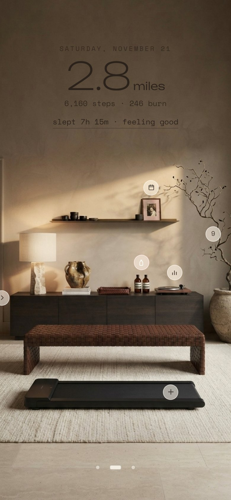
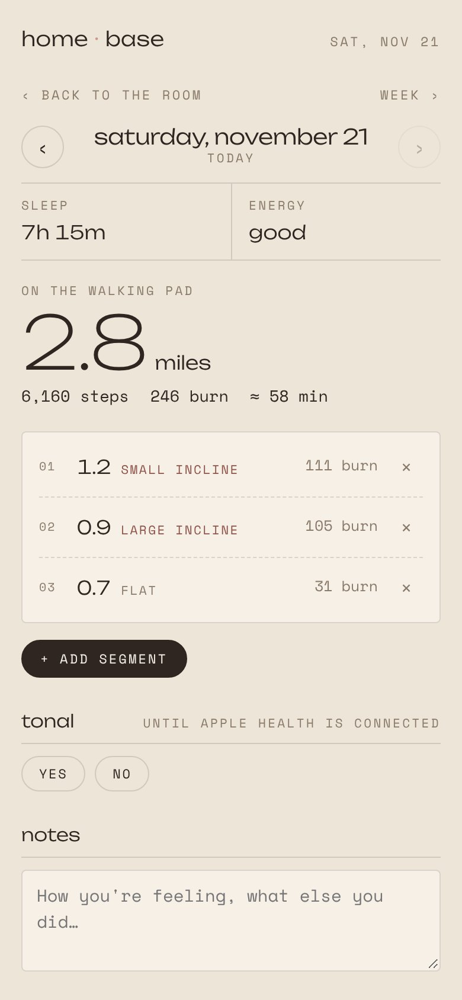
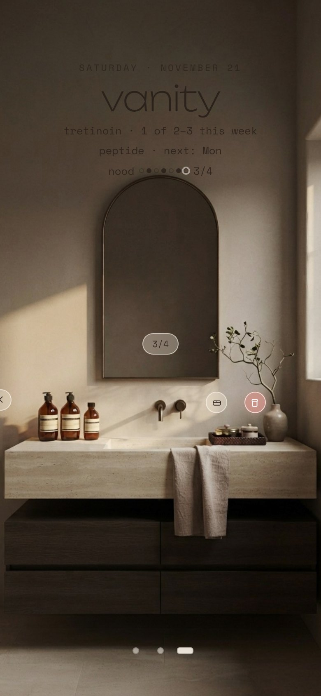
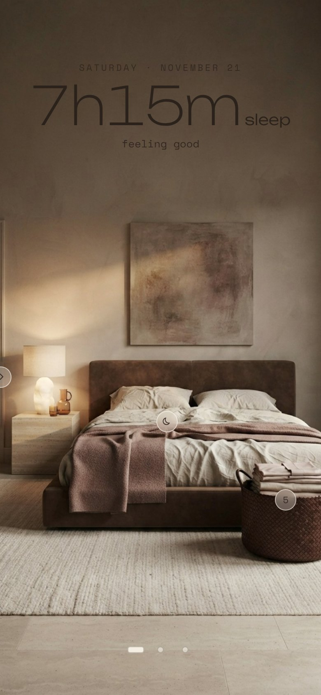
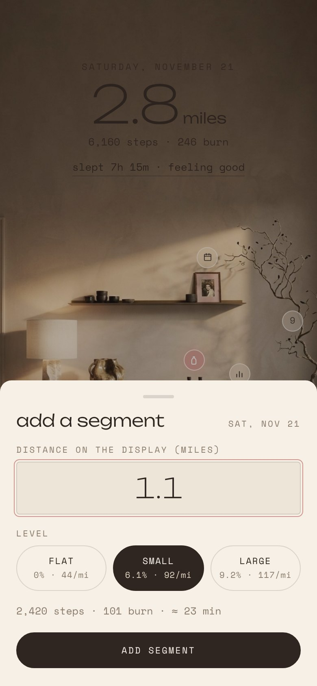

Personal build · In daily use
A home for the routines I'd rather not leave to memory.
I keep a lot of routines: walking on a pad at my desk, skincare actives, peptides, a skin device, sleep, and the plants that need water about every two weeks. For two years the record of all of it lived in a spreadsheet, a notes app and my head. Home Base pulls it into one place, and makes keeping it something I look forward to.
I believe small details are worth the work. The things I use every day should be useful and well made, the way a good leather bag or a proper pill box is. My tracking spreadsheet was neither, so I rebuilt it as something I'd actually want to open.



The problem
Discipline was never the issue. Memory was. I keep these routines without much negotiation; what slips is the tally. Was that two nights this week or three? When did the plants last get water?
- The spreadsheet did math, not overview. About 300 days of walks, with formulas I'd built myself, but it couldn't show me a week at a glance.
- Not every day is a walking day. Most trackers treat a zero as a failure. My week has a rhythm, and the tool should respect it rather than nag.
- Everything else had no home. Actives, devices and chores lived in a notes app or nowhere, which in practice meant my memory.
The core idea
An overview, not a nag. Each routine keeps its own rhythm: walking on Monday, Wednesday and Friday; a skin device four times in any seven days; peptides on fixed days; a retinoid two to three times a week; the plants about every two weeks. Home Base knows each rhythm, so it only speaks up when something is actually off pace. Everything else stays quiet.
How it works
A house, not a menu
Three photographed rooms you swipe between: bedroom, living room and vanity. Everything you can do is an object in the room. The idea came from the explorable CD-ROM games and early-2000s websites I grew up with, where you wandered into rooms instead of picking from a list.
One tap to log
Small frosted buttons sit on the objects. The walking pad logs a segment. The mirror logs the skin device in a single tap, with an undo. The branch shows the days since the plants were last watered and turns pink after fourteen.
Rest days are rest days
The room never shows zero miles. On a day off the wall simply shows the day; on a walking day it suggests that even a light, flat walk counts. A personal goal can exist, but it lives on the detail screen, never on the room.
Numbers I trust
I asked Claude to challenge my old math. The old burn calculation needed a refresh, so it now uses the ACSM walking equation, with incline grades calculated from the measured height of each prop and the length of the pad: 6.1% and 9.2%. Steps per mile still come from my own pedometer test.
History intact
About 300 days and roughly 1,000 miles, imported from the spreadsheet with missing years, typos and estimated dates cleaned up and flagged.


Design direction
Immersive and quietly nostalgic. I was thinking about the "universe" landing pages and CD-ROM games of the early 2000s, where you looked at a room and the menu lived inside the objects. Here that idea is rendered with restraint: nothing is laid out as a list, and once you know the room, the interface disappears. The material references were hospitality and craft brands I admire for exactly that kind of restraint: 1 Hotel, Restoration Hardware, Bottega Veneta, Loewe and Aesop.
- Rooms, art-directed: each one generated in Google Gemini and revised round by round, from removing a treadmill handlebar to swapping a cheap-looking coffee table for a low woven leather bench.
- Mixed type on purpose: a wide, airy display face with a little Y2K in it, paired with a typewriter-like mono for labels. A serif felt too expected.
- Subtle by default: labels became small frosted buttons, and a film grain was dialed down until it felt like a photograph rather than a filter.
How it's built
Claude
Product partner for the data model, the math and the code, and it drove Gemini in my browser to generate and download each room.
Google Gemini
The room photography, on the free tier.
A private Claude artifact
The app runs as a private page with its own database, so it works on my phone with nothing to install and nothing to pay for.
What's next: smarter connections
- Apple Health, both ways: sleep and strength sessions flow in automatically, and walking pad sessions, the one activity my phone can't see, flow back out.
- Calendar-aware walking days: read work-from-home days from my calendar, so walking days follow the real week instead of a fixed pattern.
- A Sunday note: a scheduled Claude task that reads the week and writes a short summary, such as how sleep tracked with miles and what's due next week.
- Reminders only where they help: phone notifications for fixed-day routines, nothing for the rest.
The same method as Mower Ledger and the civics app: find the real problem under the stated one, write the rules down precisely, and make the everyday version of it a pleasure to use.